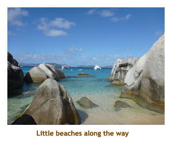

[ Home ] [ Travel ] [ Photography ] [ Pets ] [ Games] [ Rowing] [ Physics ]


Cruising on the Oceania Riviera
Travel
Cruises
Past Cruises (Diaries)
Future Cruises
Rogues Galleries
Land Trips
Diaries (Land Trips)
Hawai'i - Big Island - 04'01
Hawai'i - Maui - 05'02
Hawai'i - Big Island - 04'03
Hawai'i - Kaua'i - 09'04
Hawai'i - Big Island - 04'06
Hawai'i - Maui - 04'06
Mainland China - 05'07
Phoenix, Arizona - 12'07
Greek Isles - 05'08
Hawai'i - Kaua'i - 09'08
Hawai'i - Big Island - 09'09
Hawai'i - Maui - 05'12
Hawai'i - Big Island - 04'13
Ireland - 08'13
Mexico - Cancun 11'13
France/Belgium/Lux 07'15
Hawai'i - Big Island - 05'17
England / Wales - 06'17
Hawai'i - Big Island - 09'19
Photography
Cameras
Underwater
Pets
Tara
Blackie
Whitey
Muffy
Ollie
Rusty
Fluffy
Rufus&Dufus
Games
Rowing
Physics
Rating (out of 5):
Ship  Food
Service
Itinerary
Food
Service
Itinerary
Marjorie booked this cruise to supplement the 7 night Royal Princess cruise that she had won from her workplace. Seven nights is just not enough! There were two slight problems with coordinating the two cruisers - one ended on Saturday in Fort Lauderdale, and the other started on Sunday in Miami. So, we had to organize a transfer to Miami and an overnight hotel, but this was a breeze for Marjorie. We were really looking forward to boarding the Riviera as we had done several cruises on her sister ship, the Marina, and loved it. Unlike the previous cruise on the Royal, we would not know anyone aboard (initially) as Dave & Joan had left for the Keys and Mike & Sheila had headed back to Ontario
The Riviera turned out to be essentially identical to the Marina, right down to some of the artwork that Oceania must have bought in pairs. The ship, the food, the service were all wonderful.
We lucked out on getting a cheap balcony cabin. Marjorie knew that the oceanview cabins were sold out, so she booked us as an oceanview guarantee. About a month before sailing we got a note saying we could upgrade to a balcony for $200 pp. Marjorie said "No". About 2 weeks before sailing the offer was repeated for $100 pp. Marjorie said "No". A couple of days later we got the news that there were no oceanview cabins so they were putting us into a balcony. Smart Marjorie!!
Day 1 (Jan 13) - Boarding in Miami
As you recall from the
previous
diary, we had left off with us overnighting at the Fairfield Inn in
Miami. Well, it was time for our next cruise. We arose at 7:00 and had breakfast
in the hotel self-serve restaurant. We did some internet stuff and then
headed off to the mall we had visited yesterday to buy some snacks for the
cruise. Back at the hotel, we checked out and waited for our 12:00 noon
shuttle (KSA) to the cruise dock. Check-in was very quick and we were aboard by
12:30. On Oceania, rooms aren't available until 3:00 PM, so we dragged our
carry-ons up to the buffet for lunch. I had my favorite surf & turf "burger"
and a choco milkshake. Oceania special!! Then we found some shady lounges
to sit on to read for a while. Later, as we walked around the outside deck,
we ran into Ed and Barb and their son Michael. E&B are a wonderful couple
that we had met on the Easter Island cruise the previous year. It was really nice
to know someone on a ship of strangers! The announcement
for "rooms available" came early, at 2:30. Our bags arrived soon after so
we hung up all our stuff. Muster drill was at 4:15. Dinner wasn't until
6:30, so Marjorie did a laundry. Oceania and Princess seem to be the only
cruise lines with self-serve laundrymats on each floor. We were booked for
the Red Ginger specialty restaurant where I had the beef teriyaki. Excellent!
We wandered the ship for a while, watched some Ozzie Open and then turned
in.
Day 2, 3 (Jan 14, 15) - Two days at sea
Jan 14: We were up at 7:30 and did breakfast in the buffet. At 9:30
we played team croquet and won some BIG-O Points.
Then we did a lecture on Tortola at 10:00. The speaker was a very animated lady.
I headed off to the gym for a row and then finished the morning having lunch at the
main dining room (MDR). We joined in the min-golf at 2:00 where we teamed up with
a lovely couple (Colin and Paula)
who also liked to play trivia. We agreed to be trivia partners too.
Trivia was at 4:15. By the time we got there, our new team
mates had joined with 4 others, so we had a team of eight (max. size on Oceania).
Marjorie and I may be about average in our triva knowledge, but our biggest asset
has always been selecting the right team to join. This time was no exception as
with Ron and Clair, and Jerry and Elizabeth, and, of course, C&P, this was our
strongest team ever. (A close second was with Kathie and Craig on the Liberty
of the Seas). Woohoo, 6 BIG-O Points. We
had dinner in the MDR and I had the lobster. Very good. At evening trivia we
achieved a perfect score - don't see that to much! 24
BIG-O Points for the day. We skipped the entertainment and set our
clocks forward one hour.
Jan 15: We were up at 7:30 and headed to breakfast in the buffet.
Lots of variety of fresh fruits, and yummy Greek yoghurt. It was sunny and warm
out, but with a howling wind. As a result, the sports activities (golf, shuffleboard
and croquet) were all cancelled. Marjorie did some reading and I headed up
to the gym to row. At 11:00 we attended the Cruise Critic Meet & Greet in the
Horizons Lounge. It was a good sized group, but we really didn't see much of
the group throughout the cruise. We met for lunch with E&B in the MDR. After
a nice visit we read for a while and then headed to afternoon trivia. I'll skip
the trivia results from here on as we finished first or second each time. For dinner
it was the second of our specialty restaurants and we ate at the Polo Grill. We
had booked all of our seatings "to share", so had a nice group of 4 or 6 to
chat to during dinner. I had lobster (again) and it was very good. Then it
was late trivia to finish the evening. We skipped the entertainment. We
had completed our two sea days and were now in for 5 ports in a row.
Day 4 (Jan 16) - A day at the baths - Roadtown, Tortola
Today would be our first of 5 port days. We were up at 7:00 to watch
us dock at Roadtown, Tortola. It was a warm and sunny day.
This would be our 3rd time to the island
and we had a 9:15 snorkel trip planned to the Virgin Gorda baths. We ate
breakfast in the buffet (fruit and yoghurt) and then grabbed our snorkel gear,
heading out onto the dock to meet our tour group. We boarded a ferry that
took us over to the Virgin Gorda island. We had never been there before and
really enjoyed the trip over. Once there, we hopped on an open
trolley that transported us to the parking area above the baths. We had to
hike down a sandy / rocky / rooty path about 500 feet to a small sandy
beach. To get to the main beach, we had to spelunk through a number of
huge boulders (10 to 15 feet in diameter) that created "caves" and splash
pools. Walking, climbing, wading and crawling brought us to the main beach.
It was a beautiful beach with golden sand.
I talked to one snorkeler who said there wasn't much to see, so Marjorie and I decided that we would just go in for a swim. However, the water was crystal clear, so I decided to run back for my snorkel and mask. Gearing up, I swam over to the far rocks and the snorkeling was not bad at all! Not a ton of fish, but enough variety to make it interesting. I'm glad I tried it! Our time was running out, so we packed up our stuff and headed back up the hill using a different path that bypassed the "caves". This path was much quicker and we arrived at the parking lot a bit early. However, it was sunny and warm, and they were serving rum punch, so the wait was heavenly. We boarded the trollies which took us back to the ferry, which, in turn, took us back to the ship by 2:00 PM. That was a wonderful excursion! I had a milkshake for lunch and then we played shuffleboard followed by trivia. Dinner tonight was at Jacques and I had the Coquilles St. Jacques Yummy! We finished the day with evening trivia and then headed to bed.
|  | |||
Day 5 (Jan 17) - A return to St. John's, Antigua
We were up at 7:00 to watch us sail into St. John's, Antigua. We had been here once before,
many years ago, and were looking forward to seeing it again. Once again it was sunny and warm.
We had breakfast and then hustled to our island tour at 8:45. We were on a small bus with about
20 passengers. The tour took us almost half way around the island where we stopped at the
remains of two different fortresses. Apparently there are remains of 44 fortresses scattered
around the perimeter of the island. The views were gorgeous! Then we drove down to Nelson's
Dockyard (National Park) where we had time to walk around the various buildings and docks.
The site dated from the late 1700's and was named after Horatio Nelson who lived there for 3
years. We were back to the ship by 1:30 where I had my favorite surf & turf plate and a choco
milkshake.
After lunch we walked back in to town to look for t-shirts and so that Marjorie could use the
internet. There was a large market nearby the ship and we found the same t-shirt I had bought
10 years ago and really liked (my "dancing men" t-shirt). I thought I may as well get two of them,
but they only had one in my size. However, the lady said not to worry and took us around the
corner and upstairs to her workshop. I picked out a blank t-shirt and then she proceeded to
hot-press the design transfers onto it. Marjorie got a t-shirt made as well,
but with a different pattern. Nearby the market
we found a shop with internet, so Marjorie caught up on her T/A business. We were back
aboard in time for shuffleboard and trivia. For dinner we begged our way into Jacques and I had
the lobster thermidor. Very good! I know I said no more trivia results, but tonight it was very tough.
We scored 6 out of 15 and thought we did terrible, but it turned out to be the high score. Off to
bed.
Day 6 (Jan 18) - A day with friends in Bridgetown, Barbados
Today was our third time to Barbados. We were up at 7:00 to watch us dock. Once again
it was warm and sunny. We didn't have any excursion planned. Prior to the cruise we had
disovered that Kathie and Eric were doing the Celebrity Eclipse at the same time as our
Oceania cruise and, in fact, we would intersect on two islands. One was Barbados so we
planned to meet ashore at 11:00. This gave us time to compete in croquet at 9:15 and then
we disembarked just after 10:30. We met K&E in the cruise terminal market place and had
a wonderful visit with them. It was very hot so we ended up inside the terminal building in the
shade. We visited until almost 12:30 and then said goodbye and reboarded the ship. We
had lunch in the buffet where I opted for a surf & turf burger and a choco milkshake. After
lunch we read for a while and then did shuffleboard and afternoon trivia. Dinner was at
Toscana whence I had the rack of lamb. It was good, but not as good as was served in the
MDR a couple of nights later! Finally it was evening trivia and then to bed.
Day 7 (Jan 19) - Snorkeling in St. Lucia
Today would be our third time to St. Lucia. We had signed up for a snorkel excursion.
We were up at 7:00 to watch us dock. We had breakfast in the buffet and then headed off
to our 8:50 tour. We boarded a catamaran just in front of our ship and sailed south down
the west coast. The snorkel spot was OK - not a lot of colour or fish, but we did take a few
pictures. Sailing back we were served rum punch and some Caribbean music. We were
back to the ship by 1:00. We had the usual lunch with surf & turf and a milkshake.
We filled in the afternoon with reading, mini-golf, shuffleboard and afternoon trivia. We
had an interesting dinner in the MDR with a mother and daughter, and two elderly ladies
who were both cellists! Later that evening (and subsequent days) when we wandered through
the bar where the Oceania string quartet was playing, the cellist was taking a rest while one
of the ladies filled in for him. That's great when they let talented passengers participate!
We finished the day with evening trivia.
Day 8 (Jan 20) - A new port - Gustavia, St. Barts
We were up at 7:00 to watch us anchor at St. Barts (our final island). We had never been to this island before. We had heard of an interesting "shell" beach about a 15 minute walk through town so we were going to do St. Barts on our own. We had breakfast in the buffet and then wandered up to the sports deck for croquet. About 10:30 we tendered over to the island and the town of Gustavia. It was certainly the land of the rich and famous - with beautiful yachts in the harbour. We followed along the dockside of the streets and soon came to the beach. Instead of sand, the beach was covered in small whitish sea shells. They were easy to walk on. We donned our snorkel gear and snorkeled along a rocky outcropping at one edge of the beach. There weren't a lot of fish, but it was interesting. We enjoyed the sun on the beach for a bit and then packed up and wandered back towards the ship.
Marjorie found an internet cafe in town so I left her there and and wandered the town for a while. We tendered back to the ship for lunch - the usual for me. The afternoon was filled with mini-golf, shuffleboard and afternoon trivia with reading and wandering in between. At 5:15 we attended an "Oceania Club" cocktail party celebrating all the returning passengers. There was a presentation for the "most sailed" couple on board and, lo and behold, it was our trivia mates J&E (who had over 60 cruises and 700+ days with Oceania). Good on them! Dinner was in the MDR and I had an excellent rack of lamb. Much better than in the specialty restaurant. We finished the evening with trivia and then retired to bed.
Day 9, 10 (Jan 21, 22) - Two days at sea
Jan 21: We were up at 7:00 to enjoy our day at sea. We watched some of the Ozzie Open
and then headed to breakfast in the MDR. The MDR was always mostly empty at breakfast and lunch,
so it was impossible to "share". We tried a couple of times and ended up by ourselves at a table for
four. It was hot and sunny today. We played croquet at 10:00, then read for a bit and went to the gym.
We met for lunch with E&B in the MDR. We sat talking for so long that we missed mini-golf. Marjorie
and I played shuffleboard before the tourney. Afterwards we read for a while and then did afternoon
trivia. We had dinner with C&P in Toscana's. I had the veal picatta which was very good. We did the
evening trivia and then went to the show (60' music). We set our clocks back an hour tonight.
Jan 22: Our final full day of the cruise was spent at sea. It had rained overnight and today
would be cloudy and cooler. We had breakfast in the buffet and then played croquet at 10:00. We
read for a while and then I headed to the gym. For lunch I had the usual in the buffet. Love those
milkshakes! At 2:00 we showed up for the mini-golf but it was too cool, rainy and windy to play.
So, for the afternoon we played Sticks with C&P, finishing just in time for the final afternoon trivia.
Right after trivia we turned in our BIG-O Points for goodies. From
the sporting events and trivia we had amassed 151 BIG-O Points
which we cashed in for 3 sports t-shirts (Lycra?) and an Oceania blanket. We headed up on deck
for a shuffleboard game before dinner, but the howling wind made it impossible. We had our
final dinner at the MDR. Then it was back to our room to pack our suitcases and get them out into
the hallway. We watched some TV and then went to bed.
Day 11 (Jan 23) - Miami and Home
We were up early and had breakfast in the buffet. Our disembarkation time was 8:15 so we grabbed our carry-ons and waited in the main lounge. When we were called, it was quick getting off the ship, claiming our luggage and going through US customs. Across the street was a KSA van so we explained that we had been quoted $10 pp to the airport. The guy said OK and we headed off with two other couples going to the long term parking lot. After dropping them off the driver asked if he could return to the cruise dock to pick up some more people, and he would let us ride for free! We had plenty of time before our flight, so returned to the cruise dock for more passengers. This time we went all the way to the airport. It was about 10:00 and our flight wasn't until 1:30. We had lunch at the food court. Our flight was not direct, and we landed at Minniapolis about 5:00. We had dinner there and then boarded for YYC at 7:30. We landed about 10:00 in Calgary and Christina was there to pick us up. She drove us back to her house where we transferred everything to our car and drove home. The kitties and the house were fine. Another great cruise!